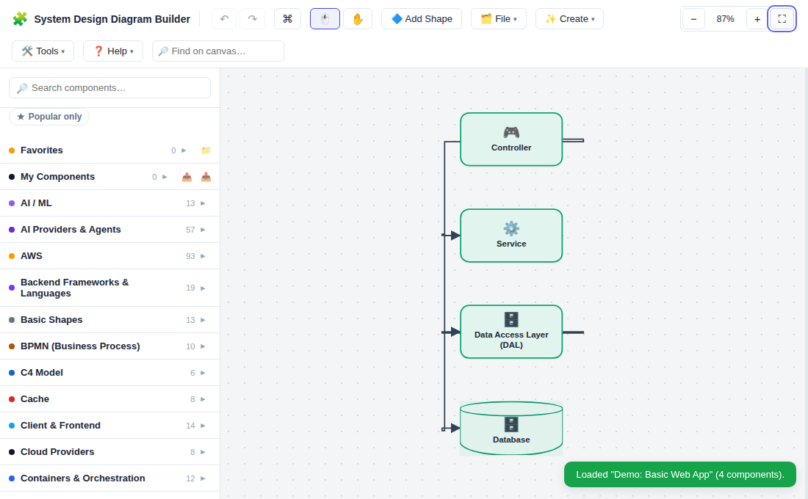
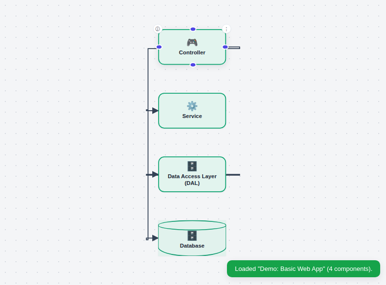
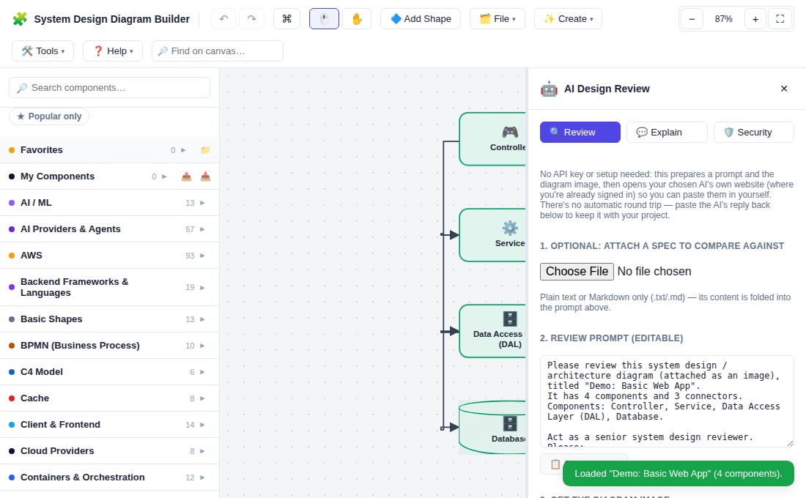
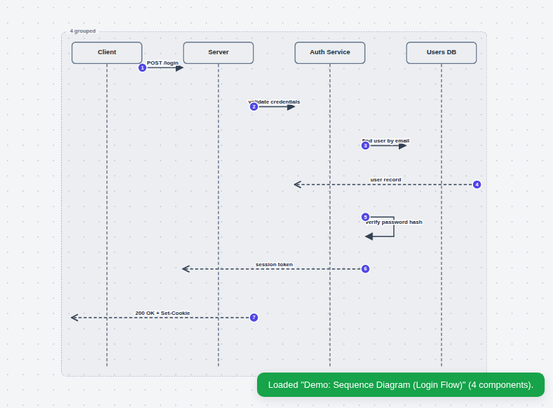
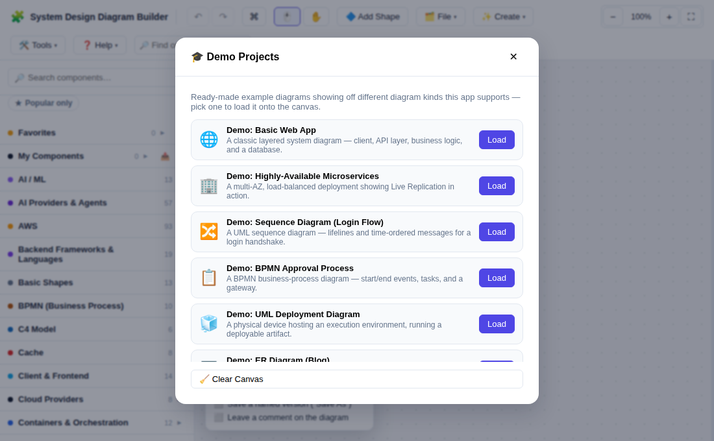
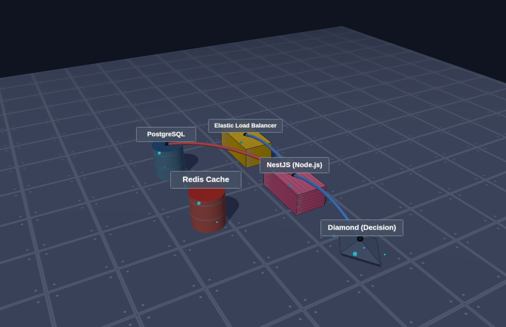
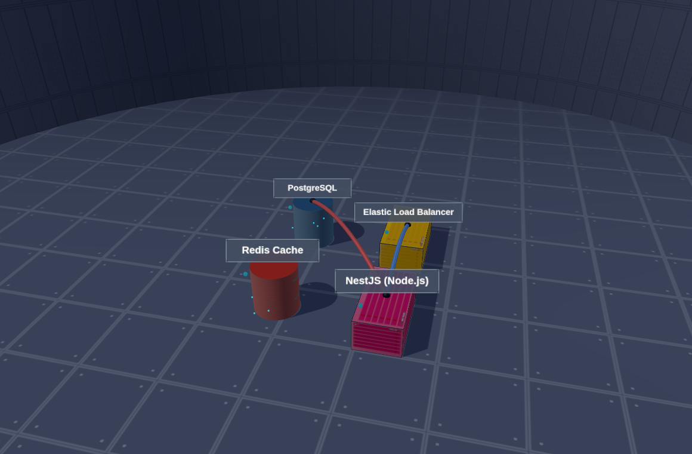
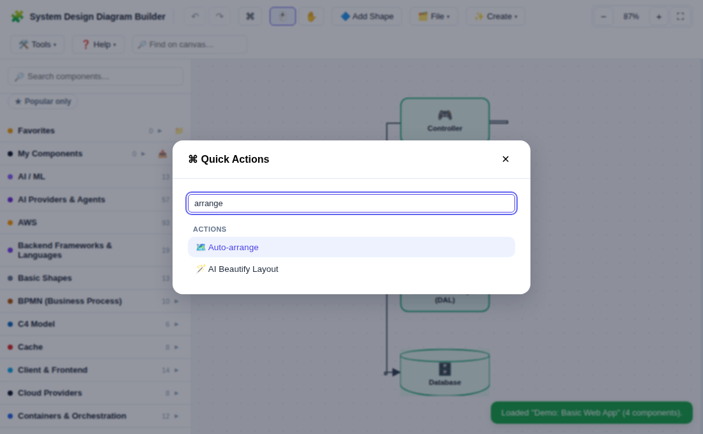

System Design Diagram Builder
A quick, visual guide to designing architecture diagrams: drag components from a huge built-in library (servers, databases, AWS services, frameworks and more), connect them, style everything, and export your diagram. Everything runs in your browser — nothing is uploaded anywhere.
🚀 Getting started
The app has three main areas:
📚 Left sidebar
Search or browse the component library by category, and drag (or click) items onto the canvas.🖼️ Canvas
Your diagram surface. Pan, zoom, arrange, and connect components here.🛠️ Toolbar
Undo/redo, navigation tools, zoom, and Add Shape stay visible; occasional/setup actions (File, Create, Tools, Help) live behind a dropdown to keep things tidy. Style controls appear when something is selected.ℹ️ Details panel
Slides in from the right with notes, labels and sub-components for the selected item.🚀 Getting Started checklist
A small dismissible card in the bottom corner tracks a few first steps — add a component, connect two, save your diagram — checking each one off as you go. Closed it and want it back? "🚀 Getting Started" (Help menu) reopens it any time.
📚 Component library
The sidebar has hundreds of predefined components grouped into categories like AWS, Databases, Cache, Messaging, Monitoring, DevOps, Containers, Networking, Security, Servers, Frontend/Backend frameworks, AI Providers & Agents (model providers, models, MCP, agents, skills — see below) and more — alphabetically sorted within each category.
- Search — type in the search box to filter across every category by name, description or tag; matches are highlighted.
- Drag onto the canvas — press and drag an item; drop it anywhere over the canvas.
- Click to add — on touch devices (or if you just want it centered), a single tap/click drops the component in the middle of your current view.
- My Components — your own saved components (see "Custom components" below) appear in their own category at the top, with right-click Edit/Delete.
- ★ Popular — a small tinted background and ★ badge mark the handful of components in each category most engineers would immediately recognize as common building blocks (PostgreSQL, Docker, S3, Kafka, React, ...) — purely a visual landmark, it never changes sort order or search.
- ★ Popular only — the toggle button right below the search box narrows every category down to just its ★-marked components (Favorites and My Components are unaffected).
- Recently Used — a pinned section (below Favorites) automatically shows the last 8 components you actually placed on the canvas, most recent first — no setup needed.
- 🗂️ Compact library — the toggle button next to "★ Popular only" hides every built-in category except your own "My Components", showing just Favorites/Recently Used/My Components — click it again (or the same setting in Default Settings) to bring the full category list back. Search always still searches everywhere regardless of this toggle.
⭐ Favorites
Right-click any component — built-in or "My Components" — and choose "Add to Favorites" to pin it to a Favorites section at the very top of the sidebar, above "My Components". Right-click it again there to remove it, or reach the same toggle from its normal spot in the library.
Organize favorites into folders, which can hold their own subfolders too: click the Favorites section's "📁" header button (or a folder's own "⋮" options button) for Add subfolder / Rename / Move up / Move down / Delete, and a favorited item's own right-click menu for Move to folder / Move up / Move down / Remove from Favorites. Deleting a folder removes its subfolders too and un-favorites whatever was filed in any of them — the components themselves are never touched, just their favorite/folder — and asks you to confirm first, showing exactly what will be affected.
🧱 Layers, patterns & state machines
Layers & Roles
This category holds ~130 code-level building blocks — Controller, Service, DAL, Authentication, React Hook, Angular Guard, DDD terms, and more. They behave differently from other components:
- Drag one onto an existing component and it attaches as a sub-component of that component instead of becoming a separate box — you'll see a green dashed outline previewing this while you drag.
- Click one while a single component is selected to attach it the same way without dragging.
- Dropped on empty canvas (or with nothing selected), it's placed as a normal standalone component instead.
- You can also add these from a component's details panel (ⓘ button) — the sub-component name field autocompletes against this same library and fills in the matching icon.
🎮 API Server + Controller, + Auth
Two themed sub-sets carry a full explanation instead of a short label: 26 classic Gang-of-Four coding patterns — Singleton, Factory, Abstract Factory, Builder, Prototype, Adapter, Bridge, Composite, Decorator, Facade, Flyweight, Proxy, Chain of Responsibility, Command, Iterator, Mediator, Memento, Observer, State, Strategy, Template Method, Visitor, and their supporting roles — and 9 common DevOps deployment patterns — Blue-Green Deployment, Canary Release, Rolling Deployment, Immutable Infrastructure, Infrastructure as Code, GitOps, Feature Flag, Zero-Downtime Deployment, Chaos Engineering. Hover (or keyboard-focus) one in the sidebar to see a popup covering what it is, how it's typically implemented, and when to reach for it — search "singleton" or "canary" to find them quickly.
Design Patterns
This category holds 26 ready-made architecture blueprints — MVC, MVVM, Layered Architecture, Repository, CQRS, API Gateway, Publish-Subscribe, Event Sourcing, Saga, Sidecar, Strangler Fig, Backend for Frontend, Hexagonal Architecture, Service Discovery, Cache-Aside, high-availability blueprints — Active-Active Replication, Active-Passive Replication (Primary-Standby), Multi-AZ Deployment, Read Replica, Multi-Region Active-Active — higher-complexity real-world scenarios — Change Data Capture (CDC) Pipeline, Database Sharding, Resilience Stack (Rate Limiter + Circuit Breaker), Leader Election — and entity-relationship (ER) diagram templates — a realistic multi-entity E-Commerce Order Schema and a Self-Referencing Relationship — each using the component library's "rows" shape for primary/foreign-key attribute lists. Dragging or clicking one instantiates the whole cluster at once — every component and connector it needs, positioned and selected together so you can immediately move or restyle the group, or undo it as a single step.
State Machines
This category holds state shapes — Initial State, State, Choice/Decision, Final State, Fork/Join, History State, Composite State — plus 6 ready-made templates (Auth Session, Background Job Processing, Circuit Breaker, Order Lifecycle, Payment Processing, TCP Connection), each modeling a realistic multi-branch flow (retries, lockouts, disputes, returns) rather than a minimal 3-state example. There's nothing special about a state or a transition: a state is just a component, and a transition's condition or event is just that connector's label — so state-machine pieces connect to (and mix freely with) anything else on your diagram using the same drag-to-connect gesture as everything else.
⬭ Authenticating → credentials valid → Logged In
Reference Architectures
This category holds 5 ready-made "Design X" system-design-interview blueprints — URL Shortener, Chat Application, Rate Limiter Service, Social Media Feed, and Ride-Sharing Dispatch. Each is a complete, if simplified, whole-system starting point (not just a small architectural building block like the Design Patterns above) — dropping one in instantiates the whole design as one grouped cluster you can immediately move, restyle, or extend to make it your own.
🖼️ Working on the canvas

| Action | How |
|---|---|
| Move a component | Drag it. Selecting several first (Shift-click or drag a selection box) moves them together. |
| Resize | Select it, then drag one of the four corner handles. |
| Multi-select | Drag on empty canvas to draw a selection box (picks up connectors fully inside it too, not just components), or Shift/Ctrl-click items — components and connectors — one by one. |
| Pan | Scroll, drag with the middle mouse button / a single touch finger, or switch to the ✋ Hand tool and drag anywhere. |
| Zoom | Ctrl/Cmd + scroll, the −/+/fit buttons in the toolbar, or Ctrl/Cmd++ / Ctrl/Cmd+- / Ctrl/Cmd+0 to zoom in / out / reset to 100%. |
| Delete | Select and press Delete, or right-click → Delete. Deleting a component always removes every connector attached to it too — no dangling arrows. |
| Duplicate | Ctrl/Cmd + D, or right-click → Duplicate. Works on a mixed selection of components and connectors together. |
| Rename | Double-click anywhere on a component — its label, icon, or empty padding all work — to rename it inline. |
| More options | Right-click a component, or use its small ⋮ button, for edit / duplicate / layering / delete. Right-click a connector for its own menu (Duplicate / Delete). |
Grouping components
Select 2 or more components and click the 🔗 "Group" button in the toolbar's contextual row — from then on, clicking or dragging any one of them selects/moves the whole group together. The ✂️ "Ungroup" button (shown whenever your selection includes a grouped component) releases them back to independent components. Duplicating a group gives the copy its own new group. A group shows a dashed background behind its members so it reads as one unit at a glance — hover it and click its ✕ to hide just the background (the group itself is unaffected).
🖱️ Select & ✋ Hand tools
Two toggle buttons at the start of the toolbar switch how dragging behaves. Select (the default) is the normal behavior above — drag a component to move it, drag empty canvas to marquee-select. Hand makes any drag pan the canvas instead, even one starting on top of a component, without moving or changing anything — the safest way to navigate a dense or unfamiliar diagram. Switch with the buttons, the H/V keys, or just hold Space to pan temporarily no matter which tool is active.
🔎 Find on canvas
The search box in the toolbar finds components and connectors already placed in your diagram by name/label — different from the sidebar's search, which searches the component library to add something new. Type a few letters and the first match is selected and centered in the view (without changing your zoom level); press Enter (or Shift+Enter to go backward) to cycle through the rest, wrapping back around once you reach the end.
🗺️ Auto-arrange
Click "🗺️ Auto-arrange" in the Tools menu to rearrange every component on the canvas into a clean top-to-bottom layout that follows your connectors' direction — everything a component points to ends up on a row below it — and reconnects every arrow to match the new positions. One click, one undo step.
📐 Scale Diagram
Click "📐 Scale Diagram" in the Tools menu to permanently resize every component's position, size, and text together by a percentage you choose — different from zooming the view, which is purely visual and never touches the diagram itself: scaling to 150% and then viewing at 100% zoom looks identical to viewing the original at 150% zoom, but the underlying data actually changed. The diagram stays roughly centered where it was.
✨ Smart Suggestions
Placing a component that has a well-known real-world companion — a Load Balancer with a web server, Kafka with Elasticsearch, an API Gateway with Lambda, and more — shows a small banner with one-click "+ Add X" buttons for each one, positioned right next to the component you just placed. Accepting one draws the connecting arrow between the two automatically (in the right direction) and places the new component in a sensible spot relative to the one you just placed, instead of dropping it unconnected.
Some components also suggest ready-made sub-components for that exact box — e.g. placing Express (Node.js) offers a Controller and a Middleware, React offers a Hook and a Component. These show in a second row with a dashed "↳" button; clicking one attaches it directly onto the node you just placed (same as dragging it in from "Layers & Roles"), instead of adding a new box next to it.
Not interested? Click "🎛️" in the toolbar and uncheck "Show 'Smart Suggestions'..." under Component library — or just dismiss an individual banner with its ✕, which times out on its own after a few seconds either way.
🧲 Smart alignment guides
While dragging a component (or a multi-selection, moved as one), it snaps into exact alignment with a nearby component's edge or center — a Figma-like dashed guide line appears while it's snapped. On by default; toggle it off with "🧲 Snap Guides" in the Tools menu if you'd rather move freely without it.
Revisiting sub-component suggestions later
The placement banner is easy to miss — and a component loaded from a saved project never saw it at all. Any component with unattached sub-component suggestions keeps a small 💡 badge on it, for as long as any of them remain unattached. Click the badge any time to open the details panel's "Suggested sub-components" section, where the same curated list appears as checkboxes — check off any number and click "+ Add selected" to attach them all in one step, instead of one click per suggestion. See "Notes & sub-components" below.
🧭 Minimap & 🔦 Focus Mode
Turn on "🧭 Minimap" (Tools menu) for a small overview panel in the canvas's corner — every component as a tiny rect, plus a "you are here" box for the current view. Click or drag anywhere on it to jump the main view there instantly, handy for a large diagram you'd otherwise have to scroll/zoom around to navigate. "🔦 Focus Mode" (Tools menu) dims every component except the current selection and whatever's directly connected to it, so you can trace one part of a busy diagram without the rest fighting for attention — turn it off to bring everything back to full brightness. Both are purely visual and remembered as a preference; neither changes your saved diagram.
💬 Pinned comments
Right-click empty canvas and choose "Add comment here" to drop a small pin at that spot and open it for editing right away. Click any existing pin to reopen it — edit its note, or check "Mark as resolved" to change its look (a ✓ instead of the speech-bubble icon, dimmed) without deleting it. A pin's "Delete" button removes it (undoable, like everything else). Comments aren't attached to any component — they're independent notes anywhere on the diagram — but they're always included when you use "Fit to screen" or export to PNG/PDF, so a pin never gets left out of frame.
Open a pin and scroll below its note for a small reply thread — type in the box and press "Reply" to add a threaded response, e.g. discussing a design decision back and forth without editing the original note itself. Each reply shows its own delete button; the thread travels with the comment through export/import, duplicate project, and full backup, same as everything else about a pin. Type @name in a reply to highlight it as a mention.
A small badge on the toolbar's "💬 Comments" button (Tools menu) always shows how many comments on the current diagram are still unresolved. Click the button itself for a full list of every comment (unresolved ones first) — click "Open" on any row to jump straight to that pin instead of hunting for it on a large canvas.
📋 Outline panel
Click "📋 Outline" (Tools menu) for a searchable, collapsible list of every component and connector currently on the canvas, grouped into two sections — handy as a quick table of contents on a large diagram. Click any entry to select and center it on the canvas; the reverse works too — select something on the canvas and its row lights up in the Outline panel automatically. Type in the search box to filter the list down by name.
🖥️ Presenter Mode
Click "🖥️ Presenter Mode" (Tools menu) to hide the toolbar, sidebar, and every side panel, leaving a full-bleed view of just the canvas — handy for presenting or screen-sharing a diagram without the editing controls on screen. A small floating "✕ Exit Presenter Mode" button in the corner (the only thing left on screen) or the Esc key brings everything back. This is just a view preference, not saved with the diagram — reloading the page always starts back in the normal editing view.
🎞️ Diagram Animation
Click "🎞️ Diagram Animation" (Tools menu) to open a side panel for building a numbered "build" sequence out of any components and connectors already on the canvas — great for revealing a diagram piece by piece while explaining it. A switcher at the top of the panel ("+ New", ✎ Rename, 🗑 Delete) lets one diagram carry several separate, independently-playable animations — handy for showing the same diagram two different ways (e.g. "Normal flow" vs "Failure scenario") without them getting mixed up. Each item in the active animation shows its order and name, with ▲/▼ buttons to reorder it, a choice between Auto (reveals on its own after a delay you set, in seconds) and Click (waits for you to advance manually), and an optional 📝 presenter note (shown only to you during playback, never part of the diagram itself). A small numbered badge also appears right on the canvas over every item currently in the sequence. You can also right-click any component or connector and choose "Add to Animation"/"Remove from Animation" instead of using the panel. "+ Add All" (in the "Add more" section) adds every remaining component/connector as its own step in one click, and "Set all steps to: ⏱️ Auto-play / 🖱️ Click" changes every step's reveal mode at once instead of one row's dropdown at a time.
Grouping items together: check the box next to several items in "Add more" and click "Add Selected as one step" to have them all reveal together, sharing one order number — or select several things on the canvas first and right-click one of them for "Add Selection to Animation". A grouped step lists each of its items as a small removable chip; removing one chip only drops that item from the group, not the whole step.
Turn on "🔎 Auto-focus" (per animation, next to the Play button) to have the view automatically pan and zoom to frame whatever a step reveals — handy for a large diagram where the next item might be off-screen.
Click "▶️ Play Animation" to start the presentation: it hides the editing chrome (like Presenter Mode) and shows only the items already revealed, one step at a time. Advance with the → arrow key (or N), or just click anywhere on the canvas, or click any of the small progress dots at the bottom to jump straight to that step; go back with ← (or P); Esc exits back to normal editing. A newly-revealed item gets a brief highlight pulse so it's easy to spot. Two extra buttons in the playback bar support an unattended showing: "⏩" (Autoplay to the end) makes every remaining step advance on its own regardless of its Auto/Click setting, and "🔁" (Loop) restarts from the beginning a moment after the sequence finishes. Press D (or the 🖊️ button) to freeze the presentation and draw freely on top of it with a small color palette — useful for circling or pointing at something live — then click "Done" to clear your markup and pick the animation back up where it left off.
"Export Animation"/"Import Animation" in the panel save or load every named animation on the diagram at once as its own JSON file, separate from the diagram itself — handy for reusing the same reveal order(s) across a copy of the diagram, or sharing just the "script" with someone else. Everything above (animations, groups, notes, auto-focus) is otherwise just part of the diagram itself, so it also travels automatically with the diagram's own JSON export/import and full backup.
Two more export buttons in the panel turn the active animation into a shareable file of its own: "🎬 Export to PPTX" builds one slide per step, cumulatively revealing what that step adds, with the step's intended timing/notes written into that slide's speaker notes (PowerPoint's own auto-advance-on-a-timer isn't something this app's PPTX writer can set directly, so treat the notes as the timing script). "🎥 Export to Video" renders the same sequence straight to a downloadable .webm video that just plays on its own — an Auto step's own delay becomes its on-screen duration, and any Click step becomes a fixed 2-second beat, so a click-through animation still turns into a normal, unattended video.
💫 Flow Simulation
Click "💫 Flow Simulation" (Tools menu) to toggle small animated dots flowing along every connector in its arrow direction — a quick, purely visual way to see which way data/requests move through the diagram at a glance, handy when presenting or just re-reading an unfamiliar diagram. It's a live view setting, not part of the diagram itself: it stays on across a reload (remembered like Dark Mode), but it's never saved into the project JSON or shown in an export. A Live Replication pair — which has no drawn connector of its own to animate — also shows a dot traveling back and forth between its two mirrored sides while this is on.
🪄 AI Beautify Layout
Click "🪄 AI Beautify Layout" (Tools menu, needs 2+ components) to ask an AI to suggest a nicer arrangement of your existing components — same copy/paste hand-off (or Direct/Local AI, if set up) as every other AI feature here. Only positions change: nothing is added, removed, resized, or restyled, and it's one normal undo step.
📃 Describe Diagram
Click "📃 Describe Diagram" (Tools menu) for an instant, fully offline plain-text summary of your diagram's structure — no AI, no internet, no waiting: how many components in each category, what connects to what, and anything left unconnected. A "📋 Copy" button copies it as plain text. Useful for a quick sanity check, or for pasting a structural summary somewhere an image wouldn't work (a text-only chat, a screen reader).
📖 Explain This Diagram
Every out-of-the-box library pattern/template (a Design Pattern, a "Design X" reference architecture, a Sequence Diagram Template...) remembers which template each of its components came from. Right-click any component from one — or open its details panel and use the "About this diagram" section there — and choose "📖 Explain This Diagram" for another instant, offline, no-AI explanation: this time specifically about that template — what it is, what every one of its components does (using this app's own curated component descriptions, surfaced here for the first time), and a numbered, step-by-step read of how it flows. A "📋 Copy as text" button copies the whole thing.
⌨️ Keyboard-only connect
Select a component using only the keyboard (Tab to it) the same way a mouse click would, then press C to enter connect mode — every nearby component gets a small numbered badge, and pressing that number draws a connector from your selected component to it, exactly like a mouse drag between two connection points. Press Esc to cancel without connecting anything.
🎨 Styling components
Select one or more components — the toolbar's second row fills in with style controls: four style-preset buttons, fill color, "no background" toggle, border color/width/style, shape, corner radius (rectangle/rounded shapes only), drop shadow, opacity, font size, text alignment, text position, show/hide icon, and (for a single selection) icon, text, width/height with S/M/L quick-size buttons.
🖥️ API Server — example of a styled component with an icon and label.
Text position controls where the label sits: centered/top/bottom inside the shape, or floating above/below it — handy for a minimalist icon-only look with a caption underneath.
This row's header (name of what's selected, plus a 📌, ›/‹ and a ✕) is always there: click › to collapse the style fields down to just that slim strip — handy for getting them out of the way on a small screen without losing your selection — and ‹ to bring them back. ✕ deselects outright when you're done editing.
✨ Style Presets, corner radius, drop shadow & opacity
Four one-click preset buttons — ⭐ Primary, 🗑️ Deprecated, 🌐 External, ✨ Highlighted — each set fill, border, border style and drop shadow together in one click, instead of adjusting every field separately. Corner radius (rectangle/rounded shapes only) fine-tunes how sharp or rounded the corners are. Drop shadow gives a component a stronger, more elevated look. Opacity fades a component out — handy for marking something as planned or not-yet-built, and works independently of Focus Mode's own dimming. Rotation tilts a component to any angle (-180° to 180°) — works on any shape, and is what gives a quick-added sticky note its casual tilt.
Floating, pinned to top, or pinned to bottom
By default this row shows as a small card that pops up right next to whatever you've selected, instead of pushing the rest of the screen around. Click 📌 on it to pin it to the top of the screen instead (back in the toolbar, like earlier versions of this app); click it again to unpin and go back to floating. Prefer it pinned to the bottom, or want floating/pinned-top as your permanent default? Set it once in "🎛️ Default Settings" → "Style editor" and every new selection uses it from then on.
Default settings for new components
Click "🎛️" in the toolbar to set defaults applied whenever you add a new component from then on: no background color, show/hide icon, text position, and how sub-components display (compact chips or a full list). A component's own style always wins after that — these are just the starting point. There's also an "Apply to all existing components now" action, if you want your current diagram to match too (undoable in one step).
Custom icon upload
Next to the built-in icon picker, an "Upload Image" button lets you use your own image file as that component's icon instead — a company logo, a screenshot, anything. Once uploaded, "Replace Image" swaps it for a different file and "Remove Image" goes back to the built-in emoji/icon-font icon.
🎨 Diagram Theme
Click "🎨 Diagram Theme" (Tools menu) to permanently recolor every component on the canvas to one of several curated palettes (Ocean, Sunset, Forest, Monochrome, Pastel). Components that currently share a fill color stay grouped together — they just all get mapped to the same new color in the chosen palette — so an existing color-coding scheme (by tier, by team, whatever) survives the re-skin. This is a real, undoable edit to your diagram's data, unlike dark mode below which is purely how the app displays itself.
➡️ Connectors & arrows

Hover or select a component to reveal four small connection points on its edges. Drag from one to another component to draw a connector — it stays attached and re-routes live as you move things. Which point it actually starts/ends on is picked automatically from where the two components sit relative to each other, not fixed to whichever point you happened to grab — so a connector always exits/enters on the geometrically sensible side, whichever exact point you dragged from. Where along that side it lands, though, is wherever you actually grabbed/dropped it — most shapes' connection points are a small dot right at the midpoint so this rarely matters, but a tall shape like a sequence-diagram lifeline exposes a full-height strip so several connectors can land on it at different heights instead of piling up on one point.
Select a connector to style it: color, thickness, dash pattern, routing (straight / elbow / curved / 🪄 magic — see below), an independent arrow-head style for each end (none, open, filled, diamond, circle — so you can build one-way, two-way, or plain lines), and an optional label. The default (elbow) routing automatically avoids every other component in its path, using as few bends as possible — no extra step needed, every connector you draw does this out of the box.
Right-click a connector for its own menu: Open details (a right-side panel with the same label field plus a free-text notes field — see Notes & sub-components), Duplicate, Delete.
🪄 Magic routing
Every connector already auto-avoids obstacles by default (see above). "🪄 Magic" is that same routing offered as an explicit choice in a connector's Routing dropdown, for when you want its distinct glowing style on purpose. If no clear path exists it falls back to a normal elbow connector rather than failing.
Manual bend points
Select a connector to reveal small handles along its path. Drag a handle to move that bend point, drag the small "+" that appears between two handles to insert a new one right there, or right-click a handle to remove just that point. Right-click the connector itself and choose "Straighten connector" to remove every manual bend point at once and go back to its routing style's normal path. Manual bend points override whatever routing style is chosen (straight/elbow/curved/magic) — the connector still keeps its color, arrows, and label, just following your own path instead.
ℹ️ Notes & sub-components
Click the small ⓘ button on a component — or its 💡 badge, if it has one — to open the details panel on the right. There you can add:
- Notes — free-form text about that component.
- Estimated Monthly Cost — an optional $/mo figure; when set, it shows as a small green badge right on the component and counts toward the running total in "💰 Cost Breakdown" (Tools menu), which also has an "🤖 Ask AI to reduce this cost" button for suggestions on trimming it.
- Labels — short tags shown as chips directly on the component itself (e.g. "prod", "10K RPS", "99.9% SLA"), not just in this panel.
- Sub-components — a list of internal parts (e.g. an API Gateway's routes, or a service's modules). Choose whether they show on the component as compact chips (default, truncated after 4) or a full untruncated list.
- 💡 Suggested sub-components — when curated suggestions (see "✨ Smart Suggestions") remain unattached for this component, they appear here as checkboxes; select any number and click "+ Add selected" to attach them all in one step.
- Rows — for "server with rows" style components, manage each internal row directly (also editable right on the node with the "+ Add row" button).
Any component with notes, labels or sub-components shows a small dot badge, and any component with unattached suggestions shows the 💡 badge, so you always know where extra detail — or a suggestion worth a look — is hiding.
Drag the panel's left edge to make it wider or narrower — your chosen width is remembered next time. Selecting a different component while the panel is open switches it straight to that component; clicking empty canvas (or otherwise deselecting) closes it.
✨ Custom components & shapes
New Component
Click "✨ New Component" in the toolbar to design your own reusable component (icon, colors, shape, default sub-components) and save it to My Components in the sidebar. Select an existing component first and it's used as a starting point. Give it an optional folder (with autocomplete of folders you've already used) to group related components together — folders show up as collapsible 📁 sub-groups under "My Components" in the sidebar; components with no folder stay listed directly, same as before. Your library can be exported/imported as its own JSON file — handy for sharing a house style across a team — either from this modal, the 📤/📥 icons on the "My Components" sidebar header, or the "Backup & Restore" toolbar button.
Add Shape
Click "🔷 Add Shape" for instant basic shapes: rectangle, rounded rectangle, circle, diamond, hexagon, cylinder (database), cloud, sticky note, "server with rows", "Group / Container" (a plain labeled boundary box, captioned at the top so the label doesn't sit over whatever you place inside it — right-click → Send to back if you drop it after the components it should visually contain), and "Lifeline" (see Sequence Diagrams). Style it afterwards like any other component.
🗒️ Sticky Notes
For a faster path to just that one shape, click "🗒️ Add Sticky Note" in the toolbar, or right-click empty canvas and choose "Add sticky note here" to drop one exactly at that spot — either way skips the "Add Shape" picker. A quick-added note starts blank (no icon) with a small random tilt, so a few of them scattered on the canvas look casually placed rather than identical. Double-click to type your text, drag a corner to resize, and use the style controls (below) to change its color, border, font size, or rotation — it's an ordinary component from then on, so it saves, exports, and undoes like any other.
⭐ Save a selection as a component
Select 2 or more components — with or without grouping them first — and click the "⭐" button in the toolbar's contextual row to save the whole selection (including any connectors between them) as one item in My Components. Unlike a Design Pattern, it keeps each component's exact styling, so placing it again reproduces exactly what you selected, re-grouped together as one unit. Selecting just a single component instead opens the full "New Component" form above, so you can still tweak its fields before saving.
💾 Saving, loading & export
- Autosave — your diagram is continuously saved in this browser; reopening the page restores it automatically.
- Save As — save a named version you can reopen later from Load.
- Load — reopen a saved diagram, or load one from a
.jsonfile. Click the ☆ next to any saved project to favorite it — favorites sort first and the "⭐ Favorites only" checkbox filters down to just them. - Export JSON — download the full diagram as a portable file (also how you back it up or move it to another browser/computer).
- Export PNG / PDF / SVG — a rendered image of your diagram, ready to paste into docs or slides. "🔺 Export SVG" is a scalable vector image that stays crisp at any zoom, unlike PNG. If your project has one or more sequence-diagram groups, each one also exports as its own extra PNG file (alongside the main diagram's) or extra PDF page, cropped tightly to just that group's own content.
- 🔎 Search All Projects — finds text across every saved project in this browser at once, not just the one currently open, with a snippet preview per match and a one-click "Load".
- 🌐 Export to... — sends the whole diagram to another tool: "📋 Copy as Mermaid" (or "🔗 Open Mermaid Live Editor", which copies it and opens the site to paste into), a downloadable
.drawiofile for draw.io/diagrams.net (with a "🔗 Open draw.io" link), the same file for Lucidchart's own importer ("🔗 Open Lucidchart"), or an Infrastructure-as-Code starter file with one resource block per recognized AWS component on the canvas — Terraform, Pulumi (TypeScript), AWS CloudFormation (YAML), or Kubernetes manifests (YAML), whichever matches your team's tooling. Best-effort — each format has its own shape/style vocabulary, so this isn't always a perfectly lossless round-trip, and every IaC file is a starting point to edit, not something meant to deploy as-is. - 🔗 Share — generates a link that encodes the whole diagram directly in the URL itself (gzip-compressed) — there's no backend, so nothing is actually uploaded anywhere. Opening the link loads an independent local copy into whoever opens it; it doesn't stay in sync with further edits on either end. The exact encoding is also documented for AI/CLI tools — see AI / CLI Integration.
Bulk export/import & full backup
Beyond single-project/single-library files, you can export/import in bulk:
- All saved projects together — "Export all… / Import all…" in the Load modal.
- All of My Components together — the 📤/📥 icons on the sidebar's "My Components" header.
- Everything at once — the toolbar's "🗄️ Backup & Restore" button bundles the live canvas, default settings, My Components, your Favorites (folders included), and every saved project into one file, and restores all of it back (after a confirmation, since it replaces your current canvas and defaults).
id matches something you already have, it overwrites that item; if only the name matches (different id), the import is kept as a separate item renamed "… (imported)" (or "(imported 2)", etc.).Storage backend
"🗄️ Backup & Restore" also has a "Storage backend" section: everything above lives in localStorage by default (needs no setup, but usually capped around 5-10MB), or you can switch it to IndexedDB instead, which has a much larger quota — useful if you keep many or large saved projects. "Switch & copy data…" always copies everything from the currently-active backend into the new one first — nothing is ever deleted from the old one, so you can switch back at any time.
Duplicate Project
Two ways to duplicate a diagram, both give every component/connector a fresh id so the copy never collides with the original:
- Duplicate Project (📄 in the toolbar, or right-click the canvas → "Duplicate as new project") — clones the whole thing into a new, independent project named "… (Copy)" and switches you to editing it. Your original stays exactly as it was.
- Duplicate entire canvas (right-click the canvas) — copies every component and connector in place, offset slightly, within the same project — the diagram, doubled.
📸 Diagram Versions & 🎬 Presentations
Version History (File menu) lets you capture a named, timestamped snapshot of the current diagram any time — click "📸 Save Version". From the list you can revert to one (undoable — Ctrl/Cmd+Z brings your current work back if you change your mind), delete one, or compare any two side-by-side: added/removed/changed components and connectors, each clickable to jump straight to it if it's still on your live canvas, with a "💬 Explain this diff with AI" button that narrates the changes in plain language.
Once you have 2 or more versions, a branch selector appears above the list — every version starts on main. "🌿 Branch from here" on any version copies its content onto a new branch you name; "🔀 Merge into..." does the same onto an existing branch. Both are an explicit "copy this content over" action, not an automatic structural merge of two different versions' changes — a simple, honest way to keep, say, an experimental redesign separate from your main line without losing either.
Presentations (File menu) turns an ordered subset of your saved versions into a slideshow — pick which versions to include, reorder them, give the presentation a name, then ▶️ Play to step through rendered images of each one with Next/Previous, or 🎬 Export PPTX to download it as a real PowerPoint file.
Clear Canvas
Right-click the canvas → "🧹 Clear canvas" deletes every component, connector and replication pair and starts fresh, after a confirmation (skipped if the canvas is already empty). Unlike "🆕 New" (File menu), which switches to a brand-new, separate project, Clear Canvas empties the current project in place — same id/name, so a later Save/autosave still writes to the same slot — and Ctrl/Cmd+Z genuinely brings everything back afterward.
🕘 Undo History
"🕘 Undo History" (File menu) shows every past edit and everything currently available to redo as one ordered list, each step auto-labeled in plain language ("Added \"API Gateway\"", "Moved 2 components", "Restyled 3 components", ...) instead of a bare number. The row marked "You are here" is your current position; click any other row to jump straight to that point in one action, instead of pressing undo/redo repeatedly to get there.
🗂️ Diagram tabs
"🗂️ Open in New Tab..." (File menu) opens a picker: start a brand-new blank diagram, or reopen any other saved project — as an additional tab alongside whatever's already open, not a replacement. Once 2 or more diagrams are open this way, a tab strip appears above the toolbar, one tab per open diagram, showing its name; click a tab to switch the canvas to it (your outgoing tab's changes are saved first, exactly like Save As would), or its "✕" to close it — which removes it from the strip but never deletes the underlying saved project, so it's still reachable from Load or "Open in New Tab..." again later. A single diagram never shows this strip at all.
🤖 AI Design Review

Click "🤖" in the toolbar to open a side panel that helps you get a system-design review from a mainstream AI — no API key or setup required by default (see Direct API mode below for the optional alternative that skips the copy/paste step).
- Optional: attach a spec — a plain-text or Markdown file whose content gets folded into the prompt, so the AI can compare your diagram against your requirements.
- Review the prompt — auto-generated from your diagram (component names, counts), fully editable.
- Get the diagram image — "Download PNG" or "Copy image" (where your browser supports copying images to the clipboard).
- Open your AI — click Claude / ChatGPT / Gemini / Copilot: this copies the prompt to your clipboard and opens that provider's website in a new tab. Attach or paste the image, paste the prompt, and send.
- Bring the answer back — paste the AI's reply into the panel and click "Save to this session" to keep it alongside your project, with quick copy/remove buttons. Saved replies aren't written to disk — they last for this browser session only, so copy anything you want to keep before closing the tab.
🤖 AI Design Review prompt + image ready → opens Claude/ChatGPT/Gemini/Copilot
⚡ Direct API mode & getting an API key
Every AI-assisted feature — AI Design Review, Generate Design from Spec, Edit with AI — defaults to the copy/paste hand-off flow above: no key, no setup, nothing ever leaves your clipboard. If you'd rather skip that and send the prompt (and diagram image, for AI Design Review) straight to a provider's own API with your own key, open Create menu → "Default settings for new components" → 🤖 AI Providers and switch "Sending mode" to Direct API calls. Don't want to manage a key at all? See Local AI mode below for a key-free alternative.
Which providers actually work this way depends on whether that provider's servers allow a browser to call them directly (CORS) — something outside this app's control:
- Claude (Anthropic) — supported. Create a key at console.anthropic.com/settings/keys (sign in, then "Create Key").
- Gemini (Google) — supported. Create a key at aistudio.google.com/apikey ("Create API key").
- ChatGPT (OpenAI) — included, but OpenAI's API may reject a direct browser call regardless of the key; if it fails, the hand-off button right next to it still works. Create a key at platform.openai.com/api-keys if you want to try it.
- Copilot — not available in Direct mode: GitHub doesn't offer a public per-key completions API for third-party apps, so it stays hand-off-only.
- Any other provider — use "+ Add custom provider…" in the same section with its full chat-completions endpoint URL and your key, as long as it speaks the same request/response shape OpenAI's API does (most self-hosted and alternative providers do).
Whichever mode is on, the original "open the provider's website" button always stays right there too — a failed direct call (wrong key, rate limit, CORS) is just a toast away from falling back to copy/paste for that one attempt.
🧩 Local AI mode (no key at all)
A third "Sending mode" option in the same "🤖 AI Providers" settings section: Local AI in your browser runs a small open model — Llama 3.2, Qwen2.5 — entirely inside this browser tab. No key, no account, no server, and nothing about your prompt or diagram ever leaves your device.
This needs WebGPU — supported on recent Chrome/Edge on desktop, Chrome on Android, and newer Safari/Firefox builds. If your browser doesn't support it, Settings shows a clear warning and the preload button is disabled rather than letting you hit a confusing failure later.
Once this mode is on, a "🧩 Send to Local AI" button appears right alongside the hand-off and Direct API buttons in AI Design Review, Generate Design from Spec, and Edit with AI — every option always stays available side by side, so a failed local attempt (unsupported browser, model still loading) is just a click away from the working hand-off fallback. Local AI mode is text-only: the diagram image in AI Design Review isn't sent to it, since these small models aren't multimodal.
Expect noticeably lower quality and speed than Claude, ChatGPT, or Gemini — these are compact models chosen to actually run in a browser, not frontier-scale ones. Good for a quick sanity check or when you'd simply rather not use a hosted provider at all.
💡 AI-Powered Suggestions
Once Direct API mode or Local AI mode is set up, AI Design Review's mode toggle gains a third option: 💡 Suggestions. Unlike Review/Explain, this one is fully automatic — no copy/paste, no opening another tab — since clicking "⚡ Send directly" or "🧩 Send to Local AI" sends the request and brings the answer straight back into the panel.
The AI is asked for a short, specific list covering three things: concrete components worth adding that the diagram is missing (named specifically — "Redis Cache", not "add caching"), pricing considerations relevant to what's actually on the canvas, and other concrete improvements (reliability, security, scalability). Each one renders as a small card with a title and a one-line explanation, grouped by category — a suggested component that matches something already in this app's library gets a one-click "+ Add" button that drops it onto the canvas right away.
🔁 Auto-suggest
Once Direct API mode or Local AI mode is set up, "Default settings for new components → 🤖 AI Providers" also has an "Auto-suggest" toggle: after a configurable number of edits to the diagram (not a timer — genuine changes only, so it doesn't fire while you're just looking around), Suggestions runs automatically in the background and a small badge appears on the "🤖" toolbar button when fresh suggestions are ready. Off by default; turn it on and set your preferred edit-count threshold in the same section.
🛡️ AI Security Review
A fourth mode alongside Review/Explain/Suggestions in the "🤖" AI Design Review panel: 🛡️ Security. Instead of a general design critique, it asks the AI to focus specifically on security — unauthenticated/unencrypted paths, missing access boundaries between trust zones, secrets or credentials management, and a component exposed directly to the internet with nothing in front of it. Works exactly like the other modes: available as a copy/paste hand-off by default, or fully automatic once Direct API mode or Local AI mode is set up.
🔍 Check Diagram
Click "🔍 Check Diagram" (Tools menu) for a handful of quick, offline structural checks — no AI, no internet, instant. It's not a full review (see AI Design Review above for that) — just a few textbook patterns most engineers would recognize immediately:
- A component in the Client/Frontend category connected directly to a Databases component, with no service/API layer in between.
- A component with no connections at all, while the rest of the diagram is wired up (an empty diagram isn't flagged).
- A Live Replication pair with no load balancer or API gateway routing traffic to either side.
Each finding is clickable — it closes the dialog and selects/centers the component(s) involved so you can fix it right away. The client-to-database and unrouted-replicas findings also offer a "🔧 Auto-fix" button — one click inserts a "Service Layer" (rerouting the direct connection through it) or a "Load Balancer" (connected to every replica) for you, as a single undoable step.
⚙️ Custom Lint Rules
Click "⚙️ Manage Custom Rules" at the bottom of the Check Diagram dialog to define your own checks on top of the built-in ones, for conventions specific to your team or project. Three rule types are available: "Requires connection" (every component in category A must connect to at least one component in category B — e.g. every Database must reach a Backup Service), "Forbidden connection" (no component in category A may connect directly to category B — e.g. Client/Frontend straight to Databases, your own stricter version of the built-in check above), and "Max count" (no more than N components from a given category — e.g. flag a diagram with more than one Load Balancer). Give each rule a short name, toggle it on/off without deleting it, or remove it entirely. Custom rules run alongside the built-in checks every time you open Check Diagram, and are saved in this browser (not part of the diagram's own JSON), so they apply across every project you open here.
✨ Smart Assists & Editing Conveniences
A handful of small, automatic conveniences that quietly reduce busywork while you edit — none of them require any AI or internet connection:
- Smart default connector labels — draw a connector between two components and, when the pairing is a common, recognizable one (a backend service to a database, a client to a load balancer, anything to a message queue, anything to a security/auth component...), a sensible label like "reads/writes" or "authenticates via" is filled in automatically. You can still edit or clear it like any other label — it's just a head start, and it only fills in when there's a confident match, otherwise it's left blank exactly like before.
- Smart duplicate naming — duplicate a single component (Ctrl/Cmd+D, or right-click → Duplicate) and its copy is automatically renamed with an incrementing number ("API Gateway" → "API Gateway 2" → "API Gateway 3"...) instead of leaving two identically-named components on the canvas. "Duplicate entire canvas" (mirroring the whole diagram) is unaffected — that's meant to read as the same diagram, so nothing there gets renamed.
- Fit to selection — the "⛶" zoom button in the toolbar now fits the view to whatever you currently have selected, when something is selected, instead of always fitting the entire diagram; its tooltip switches between "Fit to screen" and "Fit to selection" to match. Deselect (Esc) to go back to fitting everything.
🔎 Find & Replace
Open "🔎 Find & Replace" (Tools menu, or Command Palette) to rename a term across every label and notes field on the canvas in one step — every component name, connector label, and notes field, both nodes and edges. Type your search term and see a live match count as you type; optionally match case or exclude notes fields. Click "Replace all" to apply everywhere at once as a single undoable step (Ctrl/Cmd+Z reverts it in one go).
$, ., or * that would normally have special meaning in a "find" pattern — it never behaves like a regular expression.📌 Pinnable toolbar actions
Any action reachable from the Command Palette (Ctrl/Cmd+K) can be pinned as its own always-visible toolbar button, for whatever you use most and don't want to dig for. Open "📌 Manage Pinned Toolbar Actions" (Command Palette, or the "📌" button that appears once you've pinned at least one action) to check off actions to pin, reorder them with the ▲/▼ buttons, or unpin with ✕. Pinned actions appear as their own row just above the canvas tabs, and the row disappears entirely when nothing is pinned.
🔍 Searching and collapsing the Tools menu
The Tools menu (Tools ▾) is this app's biggest dropdown by far, so it gets two conveniences the others don't: a "Search actions..." box right at the top — start typing to filter its buttons down to just what matches — and a clickable ▾/▸ arrow on every section header (AI Tools, Analysis & QA, Layout Tools, ...) to collapse sections you never use, remembered the next time you open the menu. Searching for something inside a section you've collapsed still shows it, without changing what you collapsed.
🔤 Fix Text Display
Every connector label now wraps onto multiple lines instead of overflowing or hiding behind other content. If a diagram still feels cramped — a busy sequence diagram whose messages sit close together, or a regular diagram where two components are too close for their connector's label to display — click "🔤 Fix Text Display" (Tools → Layout Tools, or Command Palette) to re-space things just enough, in one undoable step. On a sequence diagram it re-spaces every message's height along its lifeline(s) based on how tall its own label actually renders (a message with a longer label gets proportionally more room than a short one); on any other diagram it nudges the two ends of an overlapping labeled connector apart just far enough for the label to clear both components, leaving everything else untouched.
📖 Show Descriptions
Click "📖 Show Descriptions" (the last button in the top toolbar row) to make every dropdown menu button also show its own tooltip explanation inline, right under its label, instead of only on hover — handy for browsing a long menu like Tools without hovering one button at a time, or on a touch device where hover tooltips don't really work. It's off by default; click it again to go back to hover-only tooltips (which are always still there either way).
🧠 Generate Design from Spec
Click "🧠 Generate Design" in the toolbar to open a 3-step wizard that proposes a brand-new diagram from a requirements spec — the reverse of AI Design Review, and built the same honest way: no API key or setup required.
- Your spec — paste your product/requirements text directly, or load it from a
.txt/.mdfile. A 🎙️ mic button appears next to this (and every other AI prompt field in this app) wherever your browser supports voice dictation — click it and speak instead of typing; what you say is appended, never replacing what's already there. - Copy the prompt to your AI — a ready-made, editable prompt that includes your spec plus an example of exactly the format this app can import, so a compliant reply can be pasted straight back in. Click Claude / ChatGPT / Gemini / Copilot to copy the prompt and open that provider's website in a new tab, or use "📋 Copy prompt" to copy it manually.
- Paste the AI's result — paste its whole reply back in (any explanation text around the JSON is fine, it's picked out automatically) and click "Generate design". If the canvas already has something on it, you'll be asked to confirm before it's replaced — undo (Ctrl/Cmd+Z) brings it right back.
🧠 Generate Design spec → tailored prompt → paste AI reply → diagram
🪄 AI Quick Start
New to the app? "🪄 AI Quick Start" (✨ Create menu) is a guided, skippable wizard that walks you from a blank canvas to an editable first diagram, in plain language:
- Set up AI (optional) — if no AI sending mode is configured yet, a nudge screen offers a direct link into AI Providers settings, or "Skip" to keep using the copy/paste hand-off flow. Already set up? This screen is skipped automatically.
- Describe your system — in your own words, what it does and who/what it talks to.
- Copy the prompt to your AI — same hand-off (or direct/local send) mechanism as Generate Design from Spec.
- Paste the AI's result — loads as a real, editable diagram, same safety net (unusable-paste error + auto-layout fallback) as Generate Design.
- Why it built it this way — a persistent screen showing the AI's own reasoning: an overview of its approach plus a one-line "why" for each component it chose, matched up against the actual diagram so you can see the reasoning next to the result rather than losing it once the diagram loads.
🖼️ Import from Image
"🖼️ Import from Image" (✨ Create menu) turns an existing diagram — a screenshot, a photo of a whiteboard, an architecture diagram from a doc — into an editable diagram here, using an AI's vision capability. Same honest, no-key-required flow as the other AI features: attach/paste the image into your AI of choice using the ready-made prompt, paste its JSON reply back in, and it loads as a real diagram you can keep editing (with the same unusable-paste error handling and auto-layout safety net as Generate Design from Spec).
💬 Edit with AI
Click "💬 Edit with AI" ("✨ Create" menu) to change your existing diagram by describing the change in plain language, instead of clicking through it by hand — the incremental sibling of Generate Design above (which replaces the whole canvas): a 3-step wizard, same honest way, no API key or setup required.
- Describe the change — e.g. "add a Redis cache between the API Gateway and the database" or "rename Order Service to Order API and make it a hexagon shape".
- Copy the prompt to your AI — a ready-made prompt built from your instruction plus your current diagram's JSON, asking for a small patch back (not a whole new diagram). Click Claude / ChatGPT / Gemini / Copilot to copy the prompt and open that provider in a new tab, or copy it manually.
- Paste the AI's result and preview — paste its reply back in and click "Preview changes" for a plain-English list of exactly what will be added, changed, or removed before anything touches your diagram. Click "Apply changes" to make it real in one step (Ctrl/Cmd+Z undoes the whole patch at once), or go back and try a different instruction/reply if the preview isn't what you wanted.
🗨️ AI Conversation
Click "🗨️ AI Conversation" ("✨ Create" menu) for an ongoing, reopenable back-and-forth about the current diagram, instead of Edit with AI's one-shot prompt above. Every message you send from here on carries the whole conversation so far, plus the diagram's current state, so your AI — including an AI CLI tool run fresh each time from a terminal — never needs re-briefing.
- Type your message — a question, a requested change, or both. The transcript above this step shows everything discussed so far in this conversation.
- Copy the prompt to your AI — automatically built to include the full transcript and the diagram's current JSON, so a stateless AI (or a CLI tool starting a fresh context each time) has complete context in one message.
- Paste the reply back in — its plain-language message is added to the transcript either way; if it also proposed a diagram change (the same patch format as Edit with AI), preview and apply it as one undoable step.
The modal returns to step 1 after each round instead of closing, so you can keep the conversation going — reopen it any time later and it resumes exactly where you left off. "🗑️ Clear conversation" empties the transcript for good (this can't be undone), and it's excluded from JSON export, full backup, and duplicate-project, since it's a browser setting about your ongoing chat, not part of the diagram itself.
🤖 AI Chat
Once Direct API mode or Local AI mode is set up, "🤖 AI Chat" ("🛠️ Tools" menu) is a fast, in-app live chat with your configured AI — type a message, hit Enter, get a reply, no copy/paste. It's genuinely the same conversation as 🗨️ AI Conversation above, just a different way to have it: send a message from the wizard, then switch to the live chat later (or the other way around), and it picks up exactly where you left off, with every earlier turn intact.
A reply can just answer in plain language, or also propose a diagram update — shown as a small preview card right under that message, with "✓ Apply update" and "Dismiss" buttons, applied as one undoable step exactly like Edit with AI.
Position it wherever's out of your way — the three buttons in its header switch between docking to the right (like AI Design Review), pinning as a drawer along the bottom, or floating as a draggable card you can drag anywhere on screen by its header (its position is remembered). Nothing else in this app can be repositioned this way. It's resizable too, in every mode: drag its left edge while docked to the side, its top edge while docked to the bottom, or its bottom-right corner grip while floating — the size you pick is remembered separately for each mode.
🔁 Live Replication
Click "🔁" in the toolbar to link a selection of components to a live-mirrored second side. Unlike the one-time Design Pattern blueprints (see above), this relationship keeps going as you keep editing.
- Create a pair — select one or more components, click "🔁", pick a mode (Active-Active, Active-Passive/Primary-Standby, or Primary-Replica — just a label, they all work the same way) and confirm. Your selection becomes "side A"; an exact copy is placed to the right as "side B".
- Add to either side, any time — select a component (new or existing) and, from "🔁", choose "Add as side A" or "Add as side B" on the pair you want. A mirror appears on the other side automatically. Or, for a single component not yet in a pair, right-click it and choose "🔁 Join replication..." to jump straight to the same options.
- Everything stays in sync — move, resize, restyle, rename, or edit a mirrored component's notes/sub-components, and its peer follows, in either direction. Delete one and its peer is deleted too, so the two sides can never quietly drift apart.
- Connectors mirror too — draw a connector between two components that are already mirrored members of the same side (e.g. a message between two sequence-diagram lifelines) and it gets its own mirror on the other side automatically, kept in sync the same way.
🔁 Primary DB ↔ auto-mirrored ↔ Standby DB
🤝 Live Collaboration
Click "🤝 Collaborate" (Tools menu) to work on the same diagram with one other person in real time — no account, no server to sign up for, and nothing routed through this app's own infrastructure: it's a direct peer-to-peer connection between the two browsers (WebRTC). Every edit either of you makes — add, move, restyle, delete, anything — appears on the other's screen within about half a second.
- Host — one of you clicks "Host", then picks how the other person will connect (see below).
- Join — the other clicks "Join" and uses whichever method the host chose. Joining replaces your current canvas with the host's, so you'll be asked to confirm first if you have unsaved work of your own — undo (Ctrl/Cmd+Z) can bring it back afterward if needed.
- Edit together — once connected, a green dot on the toolbar's "🤝" button shows you're live. Either side can click "Disconnect" any time; your diagrams simply stop syncing from that point, each staying exactly as it last was.
Two ways to connect, chosen at the moment you start hosting:
- Quick room code — the host gets a short code (like a video-call room number); the other person types it in and connects in a couple of seconds. The simplest option for most people.
- Manual code exchange — the host generates a connection code to send the other person (chat, email, whatever's convenient), gets back an answer code from them, and pastes it in to complete the connection. No third-party relay involved in setting it up at all — handy if you'd rather not depend on any outside service, even just to get the connection started.
🔀 Sequence Diagrams

A UML-style "communication flow" diagram — vertical lifelines, one per participant, with horizontal messages between them showing a call followed by a response (or any back-and-forth), read top to bottom as time.
- Open the wizard — toolbar's "✨ Create" menu → "🔀 Sequence Diagram". Enter 2 or more participant names (Client, Server, Database, ...) — add or remove rows as needed — and click "🔀 Create". One titled lifeline appears for each name, evenly spaced left to right.
- Draw messages — drag from one lifeline's edge to another, same as any connector (see Connectors & arrows). A lifeline's connection points span its full height instead of a small dot, so you can grab/drop at whatever height represents when the message happens — several messages on the same lifeline land at their own distinct heights instead of piling up on one point. A message between two lifelines starts out straight (no elbow) and is automatically numbered (1, 2, 3, ...) in the order they occur, top to bottom — a small numbered badge at each message's start, always kept correct even after adding, deleting, or undoing one. Need a specific message numbered differently than the auto order? Right-click it and choose "Set sequence number..." to manually override just its own badge (shown in a distinct color) — "Clear sequence number override" (shown instead once set) goes back to automatic.
- Style and annotate — every ordinary connector feature applies: color, thickness, solid vs. dashed (handy as a call-vs-response convention), arrow direction, and a label (positioned near its start, middle, or end from the arrow style editor). Right-click a message and choose "Open details" for a right-side panel with its label and a free-text notes field — the notes also show as a hover tooltip on the message itself.
- A lifeline can message itself — drag from a lifeline's connection strip back onto that same lifeline at a different height (e.g. "validate input" before a real call out). It renders as a small loop instead of a flat line through the lifeline, and still gets a sequence number and every normal connector feature.
- Reconnect a message — select it and drag either of its two small round endpoint handles to a different height or a different lifeline, instead of deleting and redrawing it. Dropping on empty canvas cancels the reconnect.
- Tidy up the spacing — "🛠️ Tools" menu → "↔️ Distribute Evenly" re-spaces every lifeline column and message height evenly, keeping both the lifelines' left-to-right order and the messages' top-to-bottom order exactly as they were.
- Message style presets — select a single message between two lifelines and a "Message preset" dropdown appears in the arrow style editor: Sync call, Async call, or Return sets its dash + arrowhead together instead of two separate fields.
- UML destroy marker — right-click a lifeline and choose "Mark destroyed here" for an X where it terminates (dropped exactly where you clicked); its dashed line stops there too. "Clear destroy marker" (shown instead once set) removes it.
- UML activation bars — right-click a lifeline and choose "Add activation bar" for a small draggable rectangle marking when that participant is busy. Drag its body to move it, drag either end to resize it, right-click it to remove it.
Client ┊ Server ┊
Zoom in on a sequence diagram
Group 2 or more lifelines together (select them, then "Group selection" in the style row) and a 🔍 icon appears on the group's background box — click it for a read-only zoomed-in preview of just that sequence diagram, in a modal, or "📌 Pin to side panel" to dock the same live-updating preview instead of a popup. The preview itself is view-only; click its "✏️ Edit" button (also available directly from a pinned panel) to open the real canvas scoped to just that group's lifelines and messages for actual editing — a banner marks this state, and its "✅ Done editing" button saves your changes back into the main diagram.
Combined fragments (Alt/Opt/Loop/Par/Critical/Break)
Search "🔷 Add Shape" or the sidebar's "Sequence Diagram Templates" category for "Alt Fragment", "Opt Fragment", "Loop Fragment", "Par Fragment", "Critical Fragment", or "Break Fragment" — a resizable, movable labeled box with a small UML pentagon tag showing its operator, for enclosing a group of messages under a condition (e.g. "user is premium"). Drop it behind the messages it should enclose (right-click → Send to back), and set the condition by renaming the box like any other component. One condition per box — no alt/else divider line.
Ready-made sequence-diagram templates
The sidebar's "Sequence Diagram Templates" category also has whole ready-made flows you can drop in at once, already grouped: Login Flow, OAuth Handshake, Checkout Flow, Retry with Backoff, PKCE Authorization Flow, SCIM User Provisioning, MFA Challenge, RBAC Authorization Check, ABAC Authorization Check, SSO (SAML/OIDC), SPA Silent Token Refresh, API Key Authentication, TCP 3-Way Handshake, UDP Request/Response, Password Reset Flow, Passwordless Magic Link Login, WebAuthn/Passkey Authentication, OAuth Client Credentials (M2M), WebSocket Handshake & Messaging, Webhook Delivery with Retry, Circuit Breaker Pattern, Cache-Aside Pattern, Saga Pattern (Choreography), Idempotent Request Handling, Two-Phase Commit, Outbox Pattern, Event Sourcing/CQRS Command Flow, gRPC Unary Call, GraphQL Query Resolution, Presigned URL File Upload, Kafka Consumer-Group Rebalance, Distributed Lock Acquisition, Service Mesh mTLS Handshake, Blue-Green/Canary Deployment Traffic Shift, DNS Resolution Flow, Social/Federated Login, and Step-Up Authentication.
Export as Mermaid / PlantUML
Open a sequence diagram's 🔍 zoom-in preview (above) and click "📋 Copy as Mermaid" or "📋 Copy as PlantUML" to copy it as text in that format — including activation bars, destroy markers, and any overlapping fragment box. A "Group / Container" shape overlapping one or more lifelines also wraps them in a labeled swimlane box in the exported text. Best-effort, not a guaranteed lossless round-trip.
Import from Mermaid
"Create" → "📥 Import from Mermaid" is the reverse — paste Mermaid sequenceDiagram text (participant declarations are optional) and it becomes a real, grouped diagram: participants become lifelines, and each message becomes a connector, reading arrow styles, activate/deactivate, destroy, and alt/opt/loop/par blocks. Best-effort, not a guaranteed lossless round-trip.
🧩 C4 Model
The "C4 Model" sidebar category has the standard C4 notation shapes with their conventional colors: Person / Actor, Software System, External Software System, Container, External Container, and Component.
"Create" → "🧩 C4 Context Diagram" bootstraps the most common starting point: name the system in scope, then add any number of people and external systems — it lays out the named system in the center, people in a row above it, and external systems in a row below it, each already connected to the center.
📥 Import from SQL
"Create" → "📥 Import from SQL" turns pasted CREATE TABLE statements into a real ER diagram: one entity node per table (listing its columns, with 🔑 marking a primary key) and a labeled connector per foreign key, whether written inline (REFERENCES other_table(id)) or as a table-level FOREIGN KEY (...) REFERENCES ...(...) constraint.
🖼️ Template Gallery
"Create" → "🖼️ Template Gallery" browses every Reference Architecture and Design Pattern visually, each with a small preview thumbnail, instead of scanning the sidebar's text list. Search or switch category tabs to narrow it down, then click a card to drop it onto the canvas — same as clicking it in the sidebar.
🎓 Demo Projects
"Create" → "🎓 Demo Projects" opens a picker with a ready-made example diagram for each of the different diagram kinds this app supports — a plain layered system diagram, a highly-available microservices deployment, a sequence diagram, a BPMN process, a UML deployment diagram, an ER diagram, a state machine, and a C4 Context diagram — plus a "Combo" demo showing two kinds coexisting on the same canvas at once (a regular system diagram next to a sequence diagram detailing one of its request flows), to make the point that this isn't an either/or choice.

Click "Load" on any demo to drop it onto the canvas — if the canvas already has something on it, you'll be asked to confirm first, exactly like Generate Design does before replacing your current diagram (undo brings it right back either way). The same modal's "🧹 Clear Canvas" button clears whatever's currently on the canvas, demo or not, back to blank — handy once you're done exploring a demo.
🎯 Blast Radius
Right-click any component on the canvas → "🎯 Blast Radius..." shows what would be affected if it failed, computed instantly from the diagram's own connectors — no AI. Two lists appear: "⬇️ Depends on this" (components it connects out to — they'd stop getting whatever it normally sends them) and "⬆️ Calls into this" (components that connect into it — their connections would start failing). Click any listed component to jump straight to it, or click "🎯 Highlight all on canvas" to select and frame the whole affected group at once. A component with no connections simply reports that nothing else would be affected.
🎓 Interview Mode
"Tools" → "🎓 Interview Mode" is a practice flow for system-design interview questions. Pick one of ten curated questions (Easy/Medium/Hard) and, optionally, a time limit — a live countdown then shows right in the toolbar while you build your design on the canvas. When you're ready, click "🎓 Submit for Grading" to send the question plus a plain-text description of your diagram to an AI for feedback, using the exact same copy/paste (or Direct/Local AI, if set up) hand-off as every other AI feature in this app — there's no separate automatic grading behind the scenes. "🛑 End Practice" stops the session and clears the toolbar countdown at any point.
🔗 Import from URL/Gist
"File" → "🔗 Import from URL/Gist" loads a diagram JSON hosted somewhere else — a GitHub "raw" file link, a public Gist (any file in it), or any URL that returns this app's own JSON format directly. This is the counterpart to "🔗 Share" (which encodes the whole diagram into the URL itself): use this one when the file already lives somewhere public instead. A bad link, network/CORS problem, or a file that isn't valid JSON for this app shows a specific error without touching your current canvas; a successful import replaces the canvas (confirming first if it isn't already empty).
🗺️ System Map
"File" → "🗺️ System Map" draws a small graph of every diagram you've saved in this browser, and the links between them — useful once a system diagram and a related sequence diagram (or a separate DB schema diagram) start referencing the same real system. Pick another saved diagram from the dropdown, add an optional label, and click "🔗 Add Link" to connect this diagram to it on the map; click any diagram's circle on the map to open it. A link pointing at a diagram you've since deleted is simply left off the map rather than shown broken.
🧩 Export PDF (Poster)
"File" → "🧩 Export PDF (Poster)" splits a large diagram across several same-size pages (A4 or US Letter) instead of shrinking the whole thing onto one sheet the way the plain "📄 Export PDF" does — print each page and tape or glue the edges together for a wall-size poster. Each page prints its own page number and grid position (e.g. "Page 3/6 — row 1, col 3") in the corner, and neighboring pages overlap slightly so you can line them up by eye.
📝 Review Status
"Tools" → "📝 Review Status" sets a shared 📝 Draft / 👀 In Review / ✅ Approved label on the current diagram, with your name (optional) and the time recorded every time it changes — a colored badge in the Tools menu always shows the current status. This is a lightweight, honest note for whoever else opens the diagram, not an access-control system — this app has no accounts, so anyone can change the status at any time.
🧩 Feature Level (Basic/Advanced/Custom)
This app has grown a lot of tools across the Create and Tools menus. "Create" → "🎛️ Default Settings" → "🧩 Feature Level" (or search "Feature Level" in Quick Actions) lets you choose how many of them show up:
- 🌱 Basic — only a small, always-useful core shows (New/Save/Load, basic exports, AI Quick Start, Generate Design, undo/redo, zoom, and a few cosmetic settings). Recommended if you're new here.
- 🚀 Advanced — every tool shows, exactly as this app has always worked.
- 🎛️ Custom — pick exactly which of 7 tool groups (AI Tools, Diagram Types, Collaboration, Analysis & QA, Layout Tools, Visual & Presentation, Advanced Import/Export) show up, independently of each other.
The File/Create/Tools menus organize their buttons under these same 7 labeled sections no matter which mode you're in — even in Advanced mode, grouping makes the longer menus (Tools especially) much easier to scan. Nothing here ever touches your diagram, and every action — hidden or not — stays reachable by searching for it in the Command Palette (Ctrl/Cmd+K).
🤖 AI / CLI Integration
This app has no backend, so instead of an API, there's a document any AI CLI tool (Claude Code, or any other AI agent with its own model access) can read to learn how to generate a diagram for you: "Help" → "🤖 AI / CLI Integration" (or search it in the Command Palette) opens docs/AI_INTEGRATION.md — the full JSON schema this app understands, a complete example, and instructions for handing a generated diagram back to you.
If you're asking an AI CLI tool to build you a diagram, just point it at that document (or paste its contents in) and describe what you want. It can hand the result back to you one of two ways:
- A direct link — if the tool can run code, it can build a real "🔗 Share"-style link itself (the guide documents the exact encoding) and just tell you to open it. No copy/paste at all.
- JSON to paste or import — otherwise, it gives you plain JSON: paste it into "Create" → "🧠 Generate Design from Spec" or "🪄 AI Quick Start"'s last step (skip straight past the earlier steps — pasting is all that matters), or save it as a file and use "File" → "⬆️ Import JSON". Either paste-back box also accepts a share link pasted as plain text, so whichever format the tool produced works the same way.
A root-level llms.txt file also points at this guide, for AI tools that check for it automatically.
🖥️ Working with CLI
The guide above assumes the AI CLI tool already knows where to find this app — but it can't discover that on its own; there's no API or registry that hands it your address. A bare web address doesn't finish the job either: there's no standard convention that makes a generic CLI check /llms.txt just because it was handed a domain. "Help" → "🖥️ Working with CLI" (or the Command Palette) is a short dialog that answers both gaps: its primary, first action is a ready-made prompt that already names the exact file to fetch (<live address>llms.txt), computed from the live, auto-detected address of this exact page — not a guess. The bare address is still there too, as a secondary "📋 Copy" fallback for building your own request.
The address is read straight off the page you're actually looking at, so it's always correct regardless of whether this app is running on GitHub Pages, a custom domain, or a local dev server — there's nothing to configure or keep in sync.
📴 Offline & installable
Once you've loaded this app in your browser at least once, it keeps working — including autosave — without a network connection, and reconnects to fetch anything newer in the background the next time you're online. Most browsers also let you "install" it like a native app from the browser's own menu, for a window without the usual browser chrome.
🌐 Language & RTL
Click "🌐 Language" (Tools menu) to switch the app's own chrome — toolbar menus, undo/redo/select/hand-tool labels, the sidebar search box, and the shared Cancel button — between English and Hebrew, with the whole layout mirroring to right-to-left automatically (toolbar, sidebar, dialogs). The page reloads once when you switch, so everything comes back fully consistent.
🧊 3D Presentation Mode

Click "🧊 3D Presentation" (Tools menu, needs at least 1 component) to open a full-screen 3D view of your diagram, built for presenting rather than editing — nothing here can be moved, resized, or restyled. Each component gets a 3D look matched to its 2D shape instead of one generic box: a database or cache becomes a stacked-disk storage drum, a decision diamond becomes a gem-like shape, a hexagon becomes a hex prism, a circle becomes a sphere, and everything else gets a textured server-chassis look (rack-unit seams, status LEDs) instead of a flat color. Every connector becomes an animated, segmented cable with connector-plug caps at both ends — one flow direction rendered blue, the opposite direction red, so you can tell at a glance which way each connection actually points, purely from its own geometry (two connectors running opposite ways between the same pair of components always come out one of each color). Drag to orbit around the scene, scroll to zoom, or just leave it alone — it slowly rotates on its own when you're not actively dragging, for a presentation-ready look with zero setup.
If your diagram has a Diagram Animation, playing it (▶️) inside this view reveals components in the same order it normally would, and while it plays you'll see small ambient particles moving inside each visible component — like packets of information being processed — plus pulsing status-light decals on a few components, for the look of hardware doing real work. No animation on the diagram? The scene just sits there, ready to orbit and admire.
Click "✕ Close" (or Esc) to leave 3D Presentation Mode and return to normal editing — your diagram itself is completely untouched by any of this, since the 3D scene is only ever a view built from your existing components and connectors, never saved data of its own.
The view opens already framed to fit your whole diagram, on a raised-floor-tile ground with cast shadows for a sense of scale and depth. Since there's no pan — only orbit and zoom — click "🎯 Reset View" any time to recenter and re-fit the camera if a drag or scroll leaves you looking at empty space.

Click "🏢 Realistic Room" for an even more true-to-life look, without leaving the view: the scene is wrapped in an enclosing room sized to your diagram — textured wall panels and a lit ceiling — and every component switches to a more detailed surface (individual recessed drive bays with a vendor label plate for the default look, a brushed-metal highlight and activity window for storage drums). Click it again any time to switch back to the simpler default view — nothing about your diagram changes either way.
🎬 Camera Tour
Click "🎬 Camera Tour" to open a panel for building a sequence of camera shots — works the same way in either the default view or Realistic Room. Click "📍 Add Current View" to capture wherever the camera is right now as the next shot in the list, or click "✨ Auto-Generate" to build a whole tour in one step: one shot per component (angled to look at it, never straight-on) plus a closing overview shot. Click any shot in the list to preview it, use ↑/↓ to reorder, ✕ to remove one, or "🗑️ Clear" to start over.
Click "▶️ Play Tour" to glide smoothly from shot to shot — a brief pause on each one, then an eased transition to the next. Check "Loop" first if you want it to keep touring indefinitely instead of stopping after one pass through the list. Grabbing the view yourself (drag or scroll) at any point during playback stops the tour immediately and hands control back to you.
Click "🎥 Export 3D Video" to record the whole thing to a downloadable video file: with a Camera Tour configured, the recording follows one full pass through it instead of a slow ambient spin (and any Diagram Animation reveal still plays out at the same time, if you've set one up too); with no tour, it falls back to playing a Diagram Animation through in real time if one exists (each step's own timing, exactly like a live playback), or a fixed ~8-second orbiting shot if neither exists. This all works exactly the same way in Realistic Room mode.
Click "📊 Export 3D Presentation" to export a real .pptx file instead of a video — one slide per Camera Tour shot (or per Diagram Animation step if no tour is configured, or a single overview slide if neither exists), each showing that exact camera framing as a full-size image.
⚙️ Layout
Click "⚙️ Layout" to customize the control bar itself. Under "Dock to", pick Top, Bottom, Left, or Right to move the whole bar (and whichever panel is open) to that edge of the screen — docking to the left or right also switches the buttons from wrapped rows into a single scrollable column that hugs that edge instead. Under "Buttons", switch between "Icons + Text" (the default) and "Icons Only" for a smaller footprint — every button keeps its tooltip and a real accessible name either way, so hovering (or a screen reader) always tells you what it does. Both choices stick across closing and reopening the 3D view, and even across reloading the page.
⌨️ Keyboard shortcuts

| Shortcut | Action |
|---|---|
| Ctrl/Cmd+K | Open the Command Palette ("⌘ Quick Actions") — search any app action or add any component from one box |
| Ctrl/Cmd+S | Save a checkpoint now (in addition to autosave) |
| Delete / Backspace | Delete selection |
| Ctrl/Cmd+Z | Undo |
| Ctrl/Cmd+Shift+Z | Redo |
| Ctrl/Cmd+Y | Redo (alternate) |
| Ctrl/Cmd+D | Duplicate selection |
| Ctrl/Cmd++ / Ctrl/Cmd+- | Zoom in / out |
| Ctrl/Cmd+0 | Reset zoom to 100% |
| H | Switch to the Hand tool (pan-anywhere) |
| V | Switch to the Select tool |
| Hold Space | Temporarily pan, whichever tool is active |
| Esc | Clear selection / close panels |
| Arrow keys | Nudge the selected component by 1px (not while typing in a field) |
| Shift+Arrow keys | Nudge the selected component by 10px |
| C (one component selected) | Enter keyboard-only connect mode — press a number badge to draw a connector there |
| While playing a Diagram Animation: | |
| → / N / click canvas | Advance to the next animation step |
| ← / P | Go back one animation step |
| D | Freeze the animation and draw on top of it, or resume |
| Esc | Unfreeze if frozen, otherwise stop the animation |
❓ FAQ
Is my diagram private?
Yes — this app has no backend. Everything is stored in your browser's local storage on your own device. The two exceptions, both opt-in and both under your control: using Direct API mode/pasting into an AI provider's own site sends your diagram data to that provider, and starting a Live Collaboration session sends it directly (peer-to-peer, no server in between) to whoever you connect with.
I cleared my browser data and lost my diagram — can I get it back?
Not from the app itself, which is why it's worth using Export JSON for anything important, especially before clearing site data or switching browsers/devices.
Can I use this on my phone?
Yes. The sidebar and details panel become slide-over drawers (opened via the ☰ button and the ⓘ / close buttons), and touch dragging works for moving, resizing and connecting components.
The hints disappeared — how do I see them again?
Click the 💡 button in the toolbar to restart the guided tour.
I missed the "What's New" popup — where did it go?
Click the 🆕 button in the toolbar any time to see it again.
Can I move components between diagrams?
Save the component you want to reuse as a custom component ("New Component" in the toolbar) — it will then show up under "My Components" in every diagram in this browser, and you can export/import that library as a file to move it elsewhere.
How do I move everything to a new browser/computer?
Use the toolbar's "🗄️ Backup & Restore" button to export a full backup, then import that same file in the new browser — it brings over the current canvas, default settings, My Components, Favorites, and every saved project in one step.
There are two "favorites" — what's the difference?
The sidebar's Favorites section (right-click any component → "Add to Favorites") is about pinning library components you use a lot, organizable into folders. The ☆ next to a project in the Load modal is a completely separate thing — favoriting a saved project so it sorts first. Same word, two independent features.
Does the "AI Design Review" button send my diagram to Anthropic/OpenAI/Google/Microsoft automatically?
No. It copies a review prompt to your clipboard and opens that provider's own website in a new tab, signed in as you — nothing is sent anywhere by this app itself, and it never asks for or stores an API key. You attach the image and send the message yourself, and the AI's reply only comes back into this app if you paste it in.
Does "Generate Design" call an AI automatically too?
No, same as AI Design Review — it prepares a prompt and copies it to your clipboard, then opens the AI provider's own website for you to paste it into and send yourself. The generated diagram only appears after you paste the AI's reply back into the wizard.
Why doesn't "🌐 Export to..." → Lucidchart open the diagram directly, like Mermaid Live or draw.io does?
Lucidchart's importer only accepts uploaded files — unlike Mermaid Live Editor and draw.io/diagrams.net, it has no public "open with this content pre-loaded" link. So "Open Lucidchart" downloads the same draw.io-format file (which Lucidchart's own importer accepts) and opens lucid.app in a new tab — from there, use File → Import to load it.
If I delete a component from a replicated side, does its mirror really disappear too?
Yes — deleting a mirrored component always deletes its peer, so the two sides never end up half-deleted and out of sync. Undo (Ctrl/Cmd+Z) brings both back in one step, since the deletion and its mirror are a single action.
If I freeze a replication pair, edit both sides differently, then resume — which side wins?
Neither, automatically — resuming doesn't merge or pick a winner for whatever changed while frozen. It just starts syncing new changes again from that point forward. If the two sides have drifted apart, the next edit you make to either one is what starts propagating.
There are two search boxes — what's the difference?
The sidebar's search (left panel) searches the component library — everything you could add. The toolbar's "🔎 Find on canvas" search (top bar) searches only what's already on your canvas — your placed components and connectors, by name/label.
Why did I get a warning that this app is "already open in another tab"?
Every tab of this app shares the same autosave and saved-project storage in your browser. Editing the same diagram in two tabs at once can overwrite one tab's changes with the other's, so opening a second tab shows a one-time warning in both. It's safe to keep working — just be aware that whichever tab saves last "wins" for anything both tabs touch.
Will a really large diagram (hundreds of components) slow the app down?
Components far outside your current view cost the browser very little — it skips rendering their inner detail until they're scrolled/panned/zoomed back into sight. This is automatic and invisible: "Fit to screen", PNG/PDF export, and everything else still work exactly the same regardless of how much of the diagram is currently on screen.